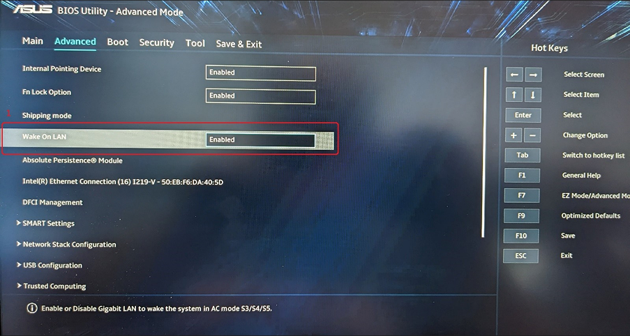
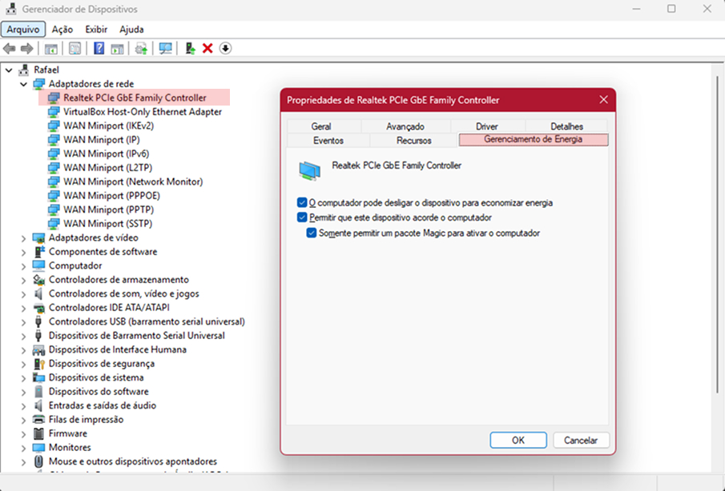

Sistemas para Automações em Casa/Empresa

Configurando o WOL

Esses são os passos a passos para configurar o WOL, alguns deles podem variar dependendo do modelo da placa mãe ou o aplicativo que será utilizado para ligar o computador de fato, nesse Manual será utilizado a BIOS de uma placa mãe da fabricante ASUS modelo a520 plus II e o aplicativo Wake On Lan da MR-Webb.
São necessárias para qualquer dispositivo que será acordado.
Na bios de sua placa mãe você deve localizar a opção para ativar o Wake On Lan Nessa bios é necessário fazer esse caminho > "F7" para entrar no Advanced mode, e ir na aba "Advanced".
É necessário permitir que o seu adaptador de rede acorde o computador, para isso, deve ir em Gerenciador de Dispositivos > Localizar seu adaptador > Clicar duas vezes > Gerenciamento de Energia > E marcar a opção "Permitir que este dispositivo acorde o computador".
Depende de qual aplicativo mas as informações necessárias para cadastrar a máquina são as mesmas.
Clique em "+" e depois em "Inserir Manualmente"
Adicione as informações do seu computador, sendo elas o IPv4 e o Endereço MAC que é um código formado por dígitos assim > Exemplo: "AA:BB:CC:DD:EE:FF"
.Basta seguir esse caminho, ambos ficam em Ethernet. *Esses valores mudam de máquina para máquina*